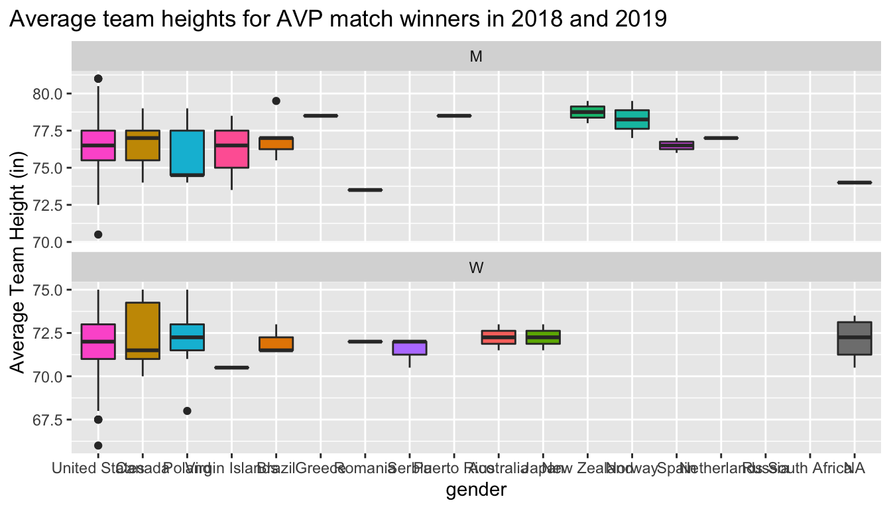

COGS 137 - Winter 2023 - Practice Midterm (Answers)
Rules
There will be rules spelled out on the real midterm. Be sure to read them before taking the real exam. There will also be an academic integrity statement for you to complete. Replace the ____________ with your name below on the real deal.
Academic Integrity Statement
I, ____________, hereby state that I have not communicated with or gained information in any way from my classmates or anyone during this exam, and that all work is my own.
A note on sharing / reusing code: We are well aware that a huge volume of code is available on the web to solve any number of problems. For this exam you are allowed to make use of any online resources (e.g. StackOverflow) but you must explicitly cite where you obtained any code you directly use (or use as inspiration). You are also not allowed to ask a question on an external forum, you can only use answers to questions that have already been answered. Any recycled code that is discovered and is not explicitly cited will be treated as plagiarism. All communication with classmates is explicitly forbidden.
Getting help
Because we cannot be available to all students across the entire length of the (real) exam, there will be no questions of instructional staff about the exam. If you find wording confusing or are unsure, note that in your answer and explain how you interpreted it. This will be taken into consideration during grading. If you are having technical difficulties or think there is an error on the exam, DM or email Prof Ellis immediately and she’ll work with you as soon as possible.
Grading and feedback
The (real) exam is worth 16% of your grade. You will be graded on the correctness of your code, correctness of your answers (often there are multiple “correct” answers, by design), the clarity of your explanations, and the overall organization of your document. (There’s no one “right” organization, but we should be able to easily navigate your midterm to find what we’re looking for.)
Logistics
Answer the questions in the document called practice-exam.Rmd. Add your code and narrative in the spaces below each question. Add code chunks as needed. Use as many lines as you need, but keep your narrative concise. Be sure to knit your file to HTML and view the file prior to turning it in.
Packages
You will need the tidyverse package for this (practice) midterm. (For the real deal, you’ll need tidyverse and tidymodels.) If working on datahub, this package has been installed, but you will need to load it. No other packages are required, but if for some reason you want to load in another package, you are permitted to do so.
The data
The dataset you’ll be working with on this practice midterm is all about beach volleyball. The full dataset is explained in detail here and includes match-level data from 76,756 volleyball matches. You should click on that link to see what information is stored in each column in this dataset and what information is included in each column.
Briefly, what you’ll use for this midterm is a subset of the full dataset, including only the 11,699 observations (rows) from 2018 and 2019 but all of the original columns. Each row summarizes the results from a single, distinct match played in a volleyball tournament.
To briefly describe beach volleyball, it is a sport played 2 on 2, so each match involves only 4 players. These data include matches from two different volleyball circuits, the international FIVB and the US-centric AVP. You will not need to know much at all about this sport to complete this midterm, and anything you need to know will be explained.
The data are stored in data/vb_matches.csv. You’ll need to read the dataset in prior to answering any questions on the midterm.
library(tidyverse)
── Attaching core tidyverse packages ──────────────────────── tidyverse 2.0.0 ──
✔ dplyr 1.1.3 ✔ readr 2.1.4
✔ forcats 1.0.0 ✔ stringr 1.5.0
✔ ggplot2 3.4.3 ✔ tibble 3.2.1
✔ lubridate 1.9.2 ✔ tidyr 1.3.0
✔ purrr 1.0.2
── Conflicts ────────────────────────────────────────── tidyverse_conflicts() ──
✖ dplyr::filter() masks stats::filter()
✖ dplyr::lag() masks stats::lag()
ℹ Use the conflicted package (<http://conflicted.r-lib.org/>) to force all conflicts to become errors
df <-read_csv('data/vb_matches.csv')
Rows: 11699 Columns: 65
── Column specification ────────────────────────────────────────────────────────
Delimiter: ","
chr (17): circuit, tournament, country, gender, w_player1, w_p1_country, w_...
dbl (42): year, match_num, w_p1_age, w_p1_hgt, w_p2_age, w_p2_hgt, l_p1_age...
date (5): date, w_p1_birthdate, w_p2_birthdate, l_p1_birthdate, l_p2_birthdate
time (1): duration
ℹ Use `spec()` to retrieve the full column specification for this data.
ℹ Specify the column types or set `show_col_types = FALSE` to quiet this message.
Questions
Question 1 (0.75 points) - How many FIVB and AVP matches are included in this dataset?
df |>group_by(circuit) |>count()
# A tibble: 2 × 2
# Groups: circuit [2]
circuit n
<chr> <int>
1 AVP 2656
2 FIVB 9043
2656 AVP
9043 FIVB
Question 2 (0.75 points) - Find the match with the longest duration. a. Where was this tournament played (City & Country)? b. How long did the match last? c. Who were the two winners?
Question 3 (1.5 points) - Across all tournaments included in this dataset, which teams have won the most tournaments? Your response should include both the winning players, their gender, and the number of tournaments they’ve won in descending order. Who has the most wins? How many men’s and how many women’s teams are in the top 10?
Note: “winning a tournament” is indicated by winning either a “Gold Medal” (FIVB) or “Finals” (AVP) match, specified in the bracket column.
# A tibble: 10 × 4
# Groups: w_player1, w_player2, gender [10]
w_player1 w_player2 gender n
<chr> <chr> <chr> <int>
1 Alix Klineman "April Ross" W 11
2 Anders Mol "Christian Sorum" M 10
3 Melissa Humana-Paredes "Sarah Pavan" W 6
4 Nick Lucena "Phil Dalhausser" M 6
5 Jake Gibb "Taylor Crabb" M 5
6 Jingzhe Wang "Shuhui Wen" W 5
7 Agatha Bednarczuk "Eduarda \"Duda\" Lisboa" W 4
8 Aleksandrs Samoilovs "Janis Smedins" M 4
9 Betsi Flint "Emily Day" W 4
10 Alexander Brouwer "Robert Meeuwsen" M 3
Alix Klineman and April Ross have won the most tournaments
There are 5 men’s teams and 5 women’s teams
Question 4 (1.5 points) - Of only the AVP tournaments included in this dataset, how many different cities hosted tournaments in 2018 and 2019? And, which cities (if any) hosted a tournament in both 2018 and 2019?
Note that tournaments are named for the city hosting the tournament.
# A tibble: 6 × 2
# Groups: tournament [6]
tournament n
<chr> <int>
1 Austin 2
2 Chicago 2
3 Hermosa Beach 2
4 Manhattan Beach 2
5 New York 2
6 Seattle 2
6 locations were duplicates between 2018 and 2019, including Chicago, Manhattan Beach, Hermosa Beach, Seattle, New York, and Austin
Question 5 (2.5 points) - Prof Ellis plays a lot of women’s beach volleyball and is only 5’5” (65 inches). Despite not having the sheer talent or raw athletic ability to make it as a professional volleyball player, she wonders if she ever had a chance at her height. To help her out, answer each of the following: a. Who was the shortest women’s player to compete in a tournament in 2018/2019? b. How tall are they? c. Did they win a tournament in 2018 or 2019?
Reminder: there are 4 players in each match whose height should be considered.
# find shortest in each columndf |>filter(gender =="W") |>summarize(min_p1 =min(w_p1_hgt, na.rm=TRUE), min_p2 =min(w_p2_hgt, na.rm=TRUE), min_l_p1 =min(l_p1_hgt, na.rm=TRUE),min_l_p2 =min(l_p2_hgt, na.rm=TRUE))
Perumal Yogeshwari was the shortest to compete (at 61 inches). By deduction, since this is the l_p2 column, we know that she did not win any tournaments.
Question 6 (3 pts) - Which country has hosted the most FIVB tournaments? Did this differ by year? Generate a visualization that shows how many FIVB tournaments each country hosted. Allow viewer to visualize this by year. And, be sure each tournament is only counted once (regardless of how many games were played).
df |>filter(circuit =='FIVB') |>distinct(tournament, year, .keep_all =TRUE) |>ggplot(aes(y=fct_infreq(country))) +geom_bar() +facet_wrap(~year) +labs(y=NULL,x="Count",title ="Number of FIVB tournaments hosted by each country") +theme_bw() +theme(plot.title.position ="plot")
Question 7 (3 pts) - Recreate the plot included below using the data you’ve been working with. Once you have created the visualization, in no more than one paragraph, describe what you think the point of this visualization might be.
Hint: The visualization uses the variable avg_team_height, which is not included in the provided data frame. You will have to create avg_team_height yourself, be determining the average (mean) team height for each winning team.

df |>filter(circuit =='AVP') |>mutate(avg_team_height = (w_p1_hgt + w_p2_hgt)/2) |>ggplot(aes(x =fct_infreq(w_p1_country), y = avg_team_height, fill=w_p1_country)) +geom_boxplot() +facet_wrap(~gender, scales="free_y", nrow=2) +labs(y ='Average Team Height (in)',x ='Country',title ='Average team heights for AVP match winners in 2018 and 2019') +theme(plot.title.position ="plot") +guides(fill="none")
Visualizes which countries have the tallest winning teams on average. For men, we see that players from the Netherlands are quite tall. For Women, it’s the US and Canada.
Question 8 (1 pts) - If you were in charge of designing the plot you just recreated in the plot above, what changes would you make to improve its effectiveness as a visualization? (You do not have to write any code for this question, just explain the different design/viz choices you would make.)